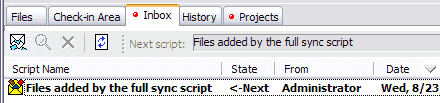

and let Code Co-op work its magic recreating a complete copy of the project. From this point on you can check out files, manipulate them, and check them back in.
and let Code Co-op work its magic recreating a complete copy of the project. From this point on you can check out files, manipulate them, and check them back in. Once the new member receives the full sync script, the dispatcher automatically puts it in the Inbox tab of the project in question.
Full sync scripts are often very large and they may be broken into chunks for distribution. The dispatcher will retrieve each chunk as it arrives and, once all the chunks are received, it will reconstruct the full sync script.

Push the Execute button and let Code Co-op work its magic recreating a complete copy of the project. From this point on you can check out files, manipulate them, and check them back in.
Keep in mind...
With large projects, creating the full sync and unpacking the full sync may take time. Often it takes no more than a couple minutes, but be prepared for a longer wait for large projects over 100Mb.
See also side-by-side comparison of various ways of enlisting in a project.